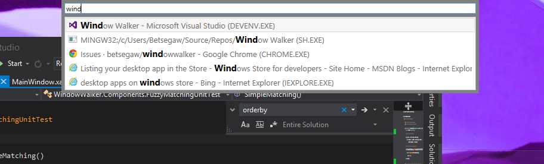

Window Walker

"Why walk your dog when you can walk your Window?" -Yuki
Have you ever wasted a good 15 seconds trying to find a window you know you have open somewhere on your desktop? Are you a keyboard person who thinks that time using the mouse is time wasted? Waste no more, here is a solution with raving reviews!
"Why would I ever use this?" -- Yuki
"Isn't this what the taskbar is for?" -- Anonymous
Window walker is an app that lets you search and switch between windows that you have open, all from the comfort of your keyboard. As you are searching for an app, you can use the keyboard up and down arrows to see an Alt-Tab style preview of the windows.
To Invoke : CTRL + WIN
To Quit Window Walker : type :quit and press Enter
You can simply start typing to filter through the windows and once you have the window that you want to switch to, you can select it using the keyboard up and down buttons (if there is more than one search result) and press Enter to make your selection.
FAQ
1. Why does this app exist?
This App exists for the simple reason that I grew tired of trying to quickly switch windows when I usually have 30+ windows open on my dev machine. Do a quick Alt + Tab and hold to see if this is you. If you have only 5 windows open, this is not a really useful app for you.
2. What kind of matches do I get?
You get results from matches in the window title AND the process name (eg. outlook.exe).
Also the search is kind of fuzzy so searching for "book" will also return "b blah blah oo blah k".
3. Can I search Internet Explorer Tabs?
Yes :)
4. I think you did a terrible job. How can I show you the sheer awesomeness of my coding skills by contributing?
Sad to hear you hate the app but glad you want to improve it! Fork it and after applying liberal amounts of your talent, ping me for a pull request (or set yourself up as the TRUE Window Walker)
5. Do I need to start up the app every time I need to do a search?
No. Once you start it up, you can always invoke it using the invoke Key combination (CTRL + WIN). However, this still means that you still need to start up the app every time you reboot your PC.
6. Known bugs and issues?
Bugs? Never! Of course, if you THINK you have found one, feel free to send me an email. I shall prove you wrong promptly!
6. Special thanks to...?
Jose Moya for making sure the search is async